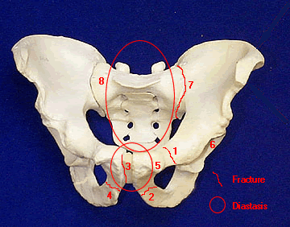

WHOOP style wearable data
Long-history HR, strain, recovery, activity label, and overnight HRV context.
From 1991 hypothesis to wearable mobility evidence
For more than 30 years, I have had to document that walking causes pain and that skating gives me mobility.
HandicapSkater is a real world wearable mobility evidence case study showing how medical history, route data, HR/HRV, recovery signals, HRV/RRI testing, accelerometer evidence, legal records, and source linked activity labels can support individualized mobility accommodation review.
This case study asks a larger health data question: how can wearable and route data help document functional mobility when ordinary categories like walking, exercise, recreation, or transportation do not describe the person’s lived reality?
The project combines longitudinal wearable data, GPS routes, targeted HRV/RRI and accelerometer testing, and legal access documentation into a source linked evidence record.
Long-history HR, strain, recovery, activity label, and overnight HRV context.
Route, distance, duration, elevation, speed, and repeated physical therapy skating context.
Activity-specific HRV/RRI, RMSSD, accelerometer, Fractal Stability Index, Comparable Similarity Score, and PICE evidence.
These records support source linked individualized review. They are not medical diagnosis, and no single metric proves pain by itself.
Included evidence events
Skating events
ParaTransit events
Baseline/recovery/readiness records excluded from burden comparisons
Targeted RRI/accelerometer/Fractal Stability Index/Comparable Similarity Score capable records
Duplicate excluded records retained for audit
The key comparison is not distance alone. Distance is functional mobility achieved. Burden is the physiological and biomechanical cost required to achieve it.
HandicapSkater.com is the public case study, evidence, and product development site. HandicapSkater.org is the standards, doctrine, and accommodation-review site. The notebooks and FSICSS platform preserve the reproducible evidence and prototype layer.
Story, healthcare brief, dashboard, platform framing, videos, route maps, and precedent summary.
Open public siteDoctrine and public standards for non-traditional mobility aid review.
Open standards siteReproducible legal and biomechanics notebook context for ParaTransit burden.
Open legal notebookWearable biomechanical and ParaTransit analysis with source linked activity context.
Open wearable notebookOlder public data science page retained as archive context.
Open legacy notebook pagePrototype platform layer for FSI/CSS evidence, source maps, retrieval, and reviewer-safe summaries.
Review FSICSS platform overviewMost wearables count activity. This project asks a harder question: is the movement functional, harmful, accessible, or forced?
For disability, more steps are not always better. The goal is sustainable functional mobility, not conformity to walking.
ParaTransit is part of the HandicapSkater biomechanics record because passive riding can still create active disability burden. Vehicle type, seat position, shared routing, vibration, vertical shock, forced posture, and ride duration can determine whether a trip provides effective access or recreates the burden that skating helps me avoid.
This extends the original walking-versus-skating theory into transportation: effective access must be evaluated by functional mobility achieved per burden unit, not by whether a nominal ride was offered.
Review ParaTransit BurdenI have had to document, again and again, that inline skates are not recreation for me. They are a non-traditional mobility aid and prosthetic adaptation that reduce the pain burden of walking.
A severe pelvic injury made ordinary walking painful and physically costly. Walking is not just uncomfortable. It can create pain, stress, and a physical price that accumulates with every required step.
The medical record matters because the skating theory did not begin as a legal tactic. It began as a body trying to solve a mechanical problem.

In 1991, I began using inline skates to ease my commute to/from the train.
Hypothesis: Skating is easier than walking and functions as my mobility aid.
At first, this was lived evidence. I could move farther, reduce painful walking, and maintain access to work and public life. The problem was that institutions saw skates and assumed recreation.
By 2003, the issue had moved from personal adaptation to civil-rights conflict. Transit systems refused access because the device did not fit standard categories.
By 2007, the DOT/FTA record recognized that roller skates could be analyzed as a mobility aid in an environment-specific way. That did not end the fight, but it created a federal administrative record showing that categorical exclusion was not enough.
In 2010, I had hip impingement surgery after imaging showed an irregular femoral head and related hip/SI issues. Surgery helped explain the mechanics, but it did not erase the disability.
Walking repeatedly forces painful joint mechanics. Skating changes the movement pattern, allowing smoother, more horizontal motion. That distinction matters because this is about functional mobility, not recreation.
People often misunderstand my disability because they see skates and assume recreation. But the disability appears in ordinary moments.
I removed the laces from my skates because bending down and holding that position long enough to tie them causes significant pain. That small adaptation explains the larger truth: the issue is not whether I can force myself to walk or bend. The issue is what my body pays when I do.
Accessibility is not just ramps and elevators. Sometimes it is the ability to avoid a painful position long enough to leave the house.
Walking requires repeated vertical loading, footstrike, hip flexion, and painful positions through the pelvis and hip. Skating lets me glide with more horizontal movement and less repeated impact.
That is why skates are not recreation for me. They are the mobility tool that lets me move through the world.
Biomechanical research on inline skating impact attenuation supports the broader point that skating can reduce impact compared with higher-impact movement patterns. My own wearable data and lived experience show why that matters for my disability.
The public story is supported by biomechanics research, medical records, route history, and activity specific sensor evidence.
The strongest claim is not that skating is better for everyone. The strongest claim is that, for my documented pelvic/SI/hip impairment, controlled skating can provide more functional mobility per burden unit than walking.
I did not begin riding a motorcycle with skates as a stunt. I began doing it because public transportation would not reliably allow me to use my mobility aid.
When transit systems refused access, I had to find another way to get to work, appointments, groceries, court, and public life. The motorcycle became a workaround for disputed access barriers, not a lifestyle choice.
When the system blocks the accessible path, disabled people are forced to build their own.
Why I ride a motorcycle with skates | Motorcycle and mobility videos | Transportation precedent
The DMV eventually updated my record to reflect that I operate a motorcycle and Class C vehicle using inline skates.
That matters because it shows a state agency reviewed the issue as a functional driving accommodation, not merely as recreation. It does not decide every public access question, but it is strong evidence that skates are part of my mobility system.

The air travel issue was not merely refusal to board. The issue was whether a non-traditional mobility aid would be recognized consistently enough to keep a disabled traveler from being stranded far from home.
That experience shows why adaptive mobility needs clear recognition across travel systems before a person is out of options.
I was forced to remove my prosthetic skates to enter a federal building to file a systemic discrimination complaint.
Later, I was again denied access when trying to meet with a pro bono attorney in a federal building. The burden is simple: the system required painful walking in order to complain about being forced to walk painfully.
The legal conclusions remain fact-specific and disputed. The access-to-justice problem is not.
ParaTransit access is not solved by offering any ride in any vehicle.
For my disability, vehicle type, seating position, route duration, shared routing, vibration, vertical shock, and forced posture can matter. A long shared ride in a cutaway bus, van, or back seat sedan can impose passive burden even though I am seated.
The accommodation question is functional: which mode provides access without imposing avoidable disability-related burden?
WHOOP, Polar H10, Kubios, Strava, and related metrics now make the physical cost visible. The signals include heart rate, HRV/RMSSD, RRI, duration, vertical/horizontal dynamics, impact burden, and activity cohorts.
This matters because disability is often invisible until data makes the burden visible. Wearable health analytics can help compare walking, skating, motorcycle travel, ParaTransit, wheelchair labeled activity, and public access stress when the records are interpreted as within person context rather than standalone diagnosis.
For years, I had to explain that skates could be a mobility aid. Today, public search results increasingly connect that idea to HandicapSkater.com, my articles, and the record I built.
That visibility did not happen because institutions understood the disability at first. It happened because I spent decades documenting the need, the biomechanics, the data, and the access disputes.
Search visibility supports public understanding, but it does not by itself decide legal status.
The current legal fight raises the disputed question of whether disability law can recognize functional mobility rather than forcing disabled people into old categories.
The question is larger than one person or one pair of skates: how should agencies, courts, healthcare reviewers, and platforms evaluate what actually lets a disabled person move through the world?
This page keeps the public narrative plain. The pleadings, exhibits, videos, agency records, notebooks, and technical pages remain available for detailed review.